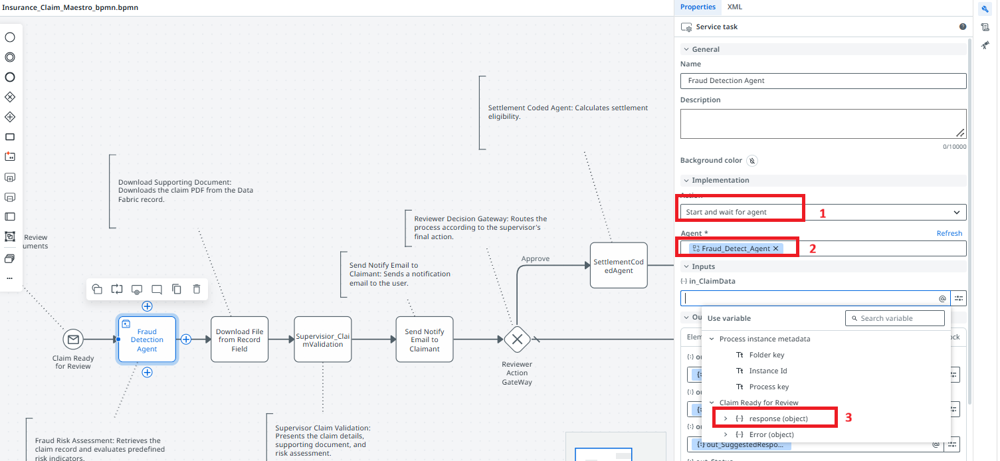
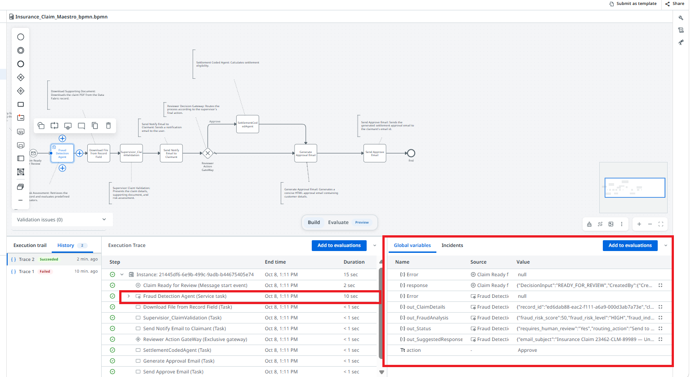

Fraud Detection Agent Task
Right after the start event, the process calls the Fraud Detect Agent you built in the previous lessons and waits for its verdict.
Configure the Fraud Detection Agent task
Select the service task Fraud Detection Agent. Set Action to Start and wait for agent, choose Agent = Fraud_Detect_Agent from this solution, and map the input in_ClaimData using Use variable → Claim Ready for Review → response (object) (the response variable comes from the Start Event you configured in the previous lesson). The agent's outputs (out_ClaimDetails, out_FraudAnalysis, out_SuggestedResponse, out_Status) become variables for the rest of the flow.

Fraud_Detect_Agent.in_ClaimData to Claim Ready for Review → response.Run and check the results
Click Debug. The Fraud Detection Agent task should succeed. In Global variables check out_ClaimDetails (including record_id), out_FraudAnalysis (score, level, indicators), out_Status (routing action) and out_SuggestedResponse (email subject and body).

out_ variables are populated.